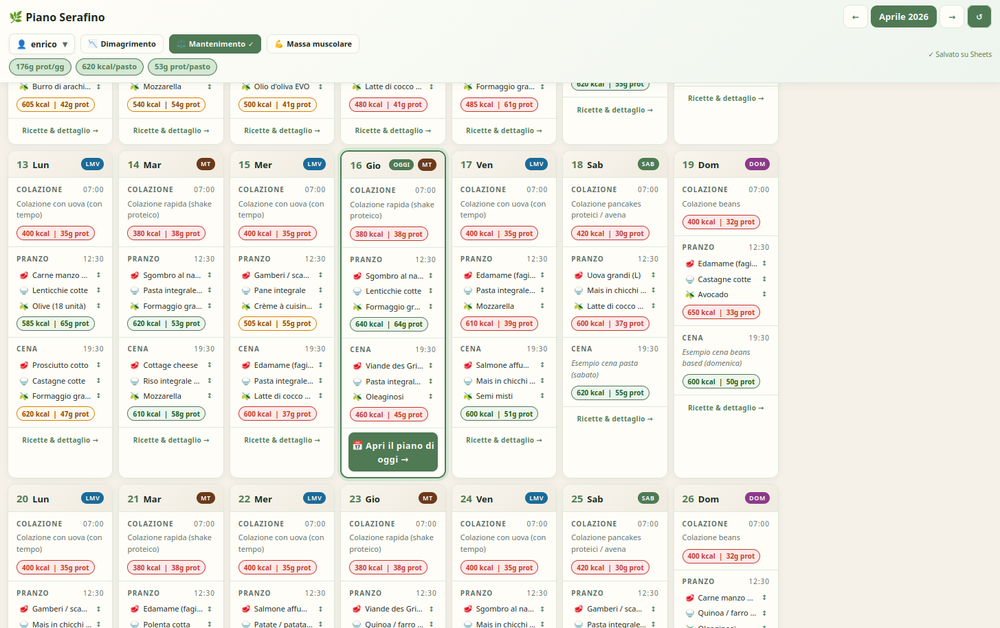
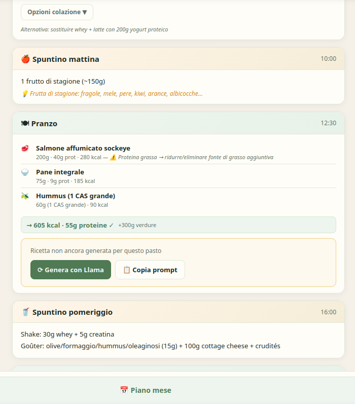
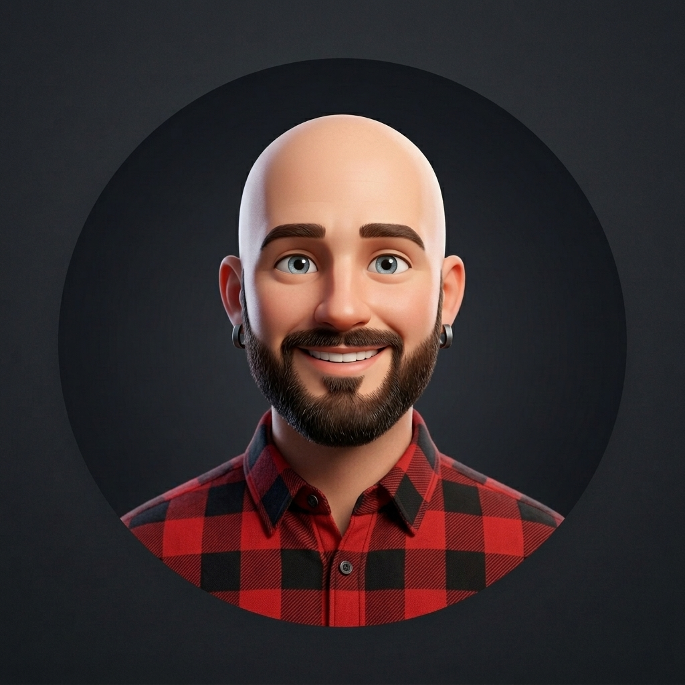

Pas un logiciel générique. Pas une agence à 15 000 CHF. Un outil web simple, construit sur votre processus réel, livré documenté, que vous possédez sans abonnement mensuel.
Ce qu'on peut construire
Chaque outil part d'un problème réel observé sur le terrain — pas d'une liste de fonctionnalités. On construit le minimum qui change vraiment quelque chose.
Voir en un coup d'œil ce qui se passe — commandes, stocks, présences, indicateurs clés — sans ouvrir cinq fichiers Excel.
Suivre vos prospects et clients sans la complexité d'un Salesforce. Construit pour votre vocabulaire, votre cycle de vente, votre équipe.
Gérer les plannings, les menus, les commandes fournisseurs ou les rendez-vous — dans un outil qui reflète vraiment votre logique de travail.
Cas réel 01 — Commerce multilingue
Planeto Geneva — boutique de cartes et produits du monde, clientèle internationale — gérait ses leads et ses relances dans des notes éparpillées. Aucun suivi structuré, aucune visibilité sur les opportunités ouvertes.
Le besoin : un CRM simple, multilingue, avec qualification automatique des visiteurs selon leur langue et leur intérêt.
"Avant, on perdait des contacts parce qu'on n'avait pas de système. Maintenant le bot qualifie, la fiche se crée, et je vois tout en un endroit. Simple."
Cas réel 02 — App de planification
Chaque semaine, création manuelle de plans alimentaires personnalisés pour plusieurs familles — tableaux Excel, calculs nutritionnels répétés, envoi par mail.
Le besoin : un outil qui génère automatiquement les plans selon les contraintes (allergies, préférences, nombre de personnes), et propose des recettes adaptées.


Comment ça se passe
Chaque projet commence par observer comment vous travaillez vraiment — pas par une liste de spécifications. L'outil découle du terrain, pas l'inverse.
On regarde ensemble comment vous travaillez aujourd'hui — outils existants, flux d'information, points de friction. Pas de questionnaire, une conversation.
On s'accorde sur ce que l'outil fait, ce qu'il ne fait pas, et le critère qui dira qu'il réussit. Budget, délai et propriété fixés par écrit avant de commencer.
Livraison d'une première version utilisable en 1 à 3 semaines. Vous testez dans vos conditions réelles, on ajuste. Pas de surprise en fin de projet.
L'outil est livré documenté, avec formation de votre équipe. Vous pouvez tout gérer sans moi — ou me rappeler pour l'étape suivante.
Pourquoi pas une autre solution
Un SaaS vous demande d'adapter votre façon de travailler à son interface. Ici, c'est l'inverse : l'outil s'adapte à votre vocabulaire, vos étapes, vos contraintes réelles.
Lundi, Notion, Airtable : puissants, mais vous passerez des semaines à configurer pour votre cas — et vous dépendrez toujours de leur roadmap et de leur tarif.
Vous possédez l'outil entièrement. Code, données, hébergement — tout vous appartient. Aucune licence mensuelle, aucun abonnement d'agence, aucune dépendance.
Une agence livre, puis facture la maintenance. Ici, la transmission fait partie du projet — votre équipe peut utiliser et faire évoluer l'outil sans passer par moi.
Un développeur code ce qu'on lui demande. Je commence par observer ce dont vous avez vraiment besoin — souvent différent de ce que vous pensiez demander.
Fréquent : un client commande une app de gestion alors que le vrai problème est un processus flou. On le clarifie d'abord, on code ensuite.
L'outil est construit pour que votre équipe puisse l'utiliser sans formation technique continue. Pas de dépendances obscures, pas de code non maintenu à reprendre dans 6 mois.
Les outils internes faits maison fonctionnent jusqu'à ce que la personne qui les a créés parte. La documentation et la transmission sont incluses dans chaque projet.
Tarifs
Premier échange pour comprendre si une app sur mesure est la bonne solution — ou si un autre outil existant répond mieux à votre besoin.
Paiement unique. Propriété totale. Le prix exact est défini après le diagnostic — selon le périmètre, pas à l'heure.
Questions fréquentes
Commencez par un échange gratuit. On regarde ensemble si une app sur mesure est la bonne réponse — ou si quelque chose d'autre résout le problème plus vite.
